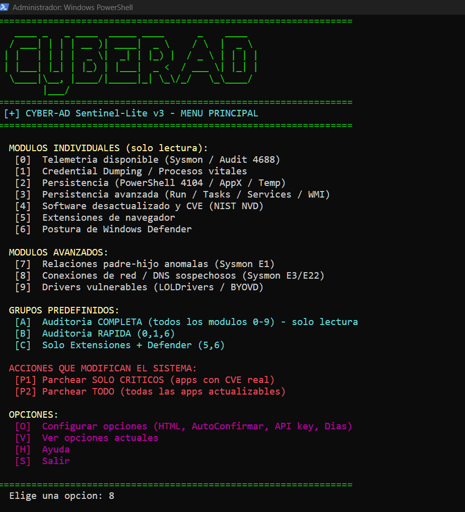
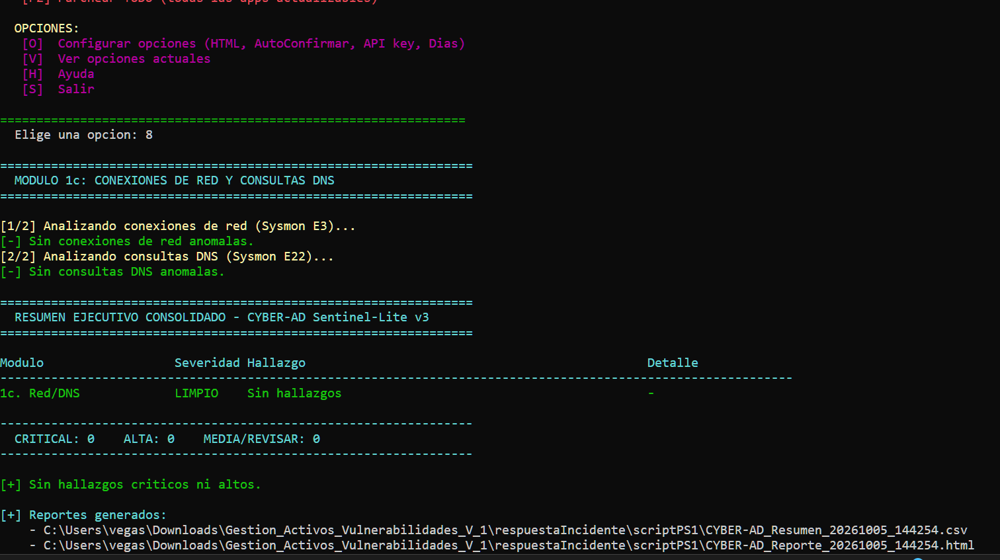
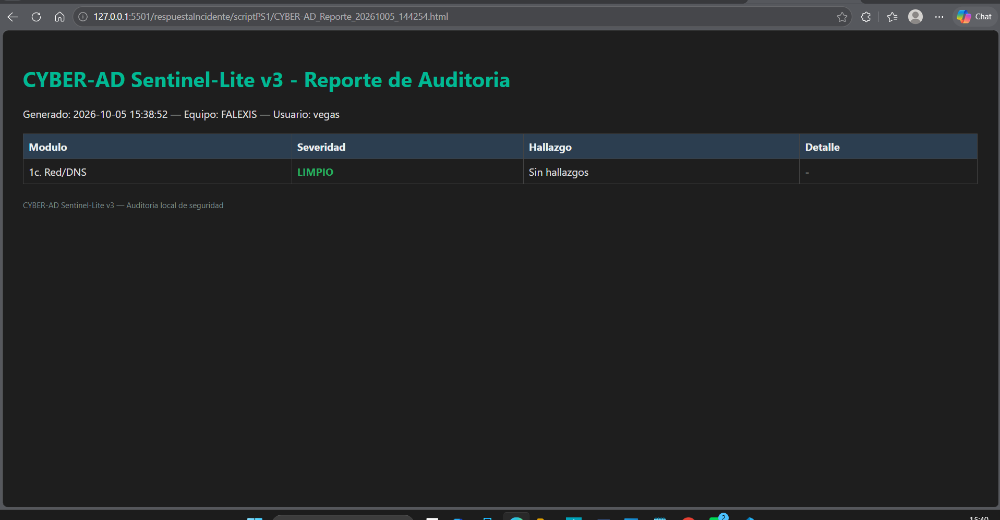
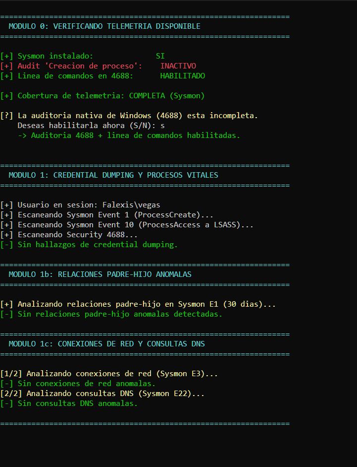
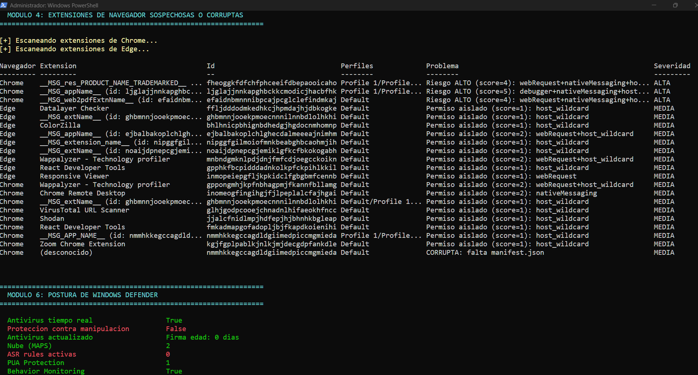
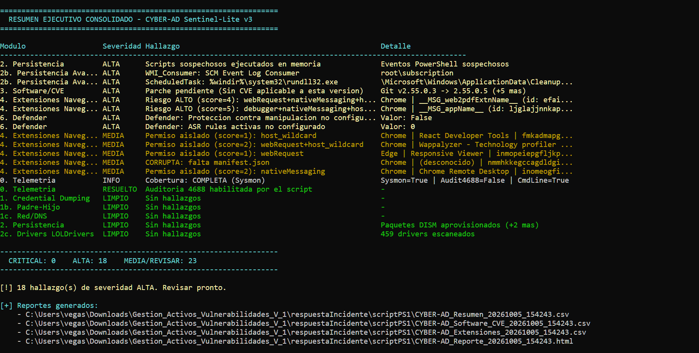
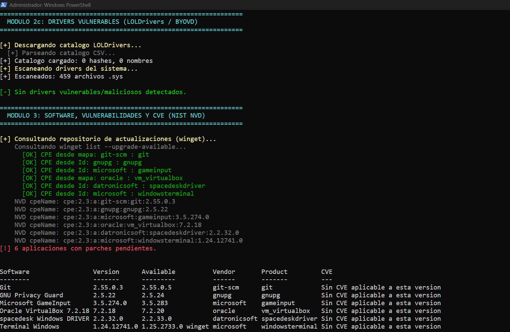
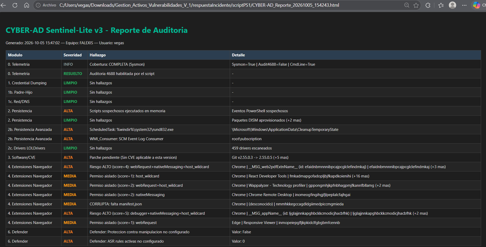

CYBER-AD Sentinel-Lite v3Auditoría de seguridad y threat hunting para Windows, sin EDR.
Un sustituto manual de las consultas KQL de Microsoft Sentinel y Defender para endpoints y servidores que no tienen EDR/XDR. Inspecciona el sistema, mapea telemetría forense y parchea vulnerabilidades desde la consola.
| Tarea programada\Microsoft\Windows\ApplicationData\CleanupTemporaryState | ALTA |
| WMI Consumerroot\subscription → SCM Event Log Consumer | ALTA |
| PowerShell 4104Bloques de código ofuscados | DETECTADO |
| Windows DefenderPostura y mitigaciones | OK |

Qué hace diferente a Sentinel-Lite
Detección y respuesta básica en equipos donde no puedes desplegar un agente.
Auditoría local avanzada
Ejecuta reglas de detección directamente sobre los registros de eventos locales, sin agentes complejos.
Enriquecimiento con NIST NVD
Consulta de forma automática los CVE del software desactualizado en la base de datos oficial del NIST.
Modo dual
Menú interactivo por consola o ejecución 100% automatizada por CLI, pensada para scripts de despliegue.
Licencia MIT
Uso corporativo permitido, con los términos de exención de responsabilidad en el archivo LICENSE.
Módulos incluidos
Arquitectura modular. Los módulos de detección son de solo lectura; solo el parcheo modifica el sistema.
Ningún módulo coincide con la búsqueda.
Demostración de uso
Haz clic en cualquier captura para verla ampliada.



El proyecto en acción
Una ejecución real de la auditoría completa, de principio a fin.
Edita la constante VIDEO al final del archivo para usar tu vídeo (YouTube o MP4 local).
Instalación y uso rápido
Ejecuta PowerShell como Administrador.
Cómo interpretar los resultados
Caso real de la Auditoría COMPLETA (opción A): el script analiza el sistema por capas y clasifica el riesgo para que sepas qué priorizar.
| Componente | Hallazgo / ubicación | Severidad | Diagnóstico técnico |
|---|---|---|---|
| PowerShell 4104 | Ejecución de bloques de código | DETECTADO | Scripts sospechosos u ofuscados ejecutados directamente en memoria. |
| Tarea programada | \Microsoft\Windows\ApplicationData\CleanupTemporaryState | ALTA | Tarea anómala que invoca a %windir%\system32\rundll32.exe. |
| WMI Consumer | root\subscription → SCM Event Log Consumer | ALTA | Persistencia avanzada mediante suscripciones de eventos WMI que evaden el inicio tradicional. |
S.webRequest + nativeMessaging + host_wildcard o debugger: pueden interceptar tráfico sensible o interactuar con binarios locales.Reporte HTML generado
Al terminar, se compila un archivo independiente CYBER-AD_Report_*.html.

Navegación e historial
Panel lateral para saltar entre los módulos analizados.

Resumen ejecutivo
Vista gráfica del estado global, pensada para gerencia o clientes.

Análisis de vulnerabilidades
Software desactualizado cruzado con sus identificadores de riesgo.

Diseño responsivo
Se abre limpio en cualquier navegador corporativo.